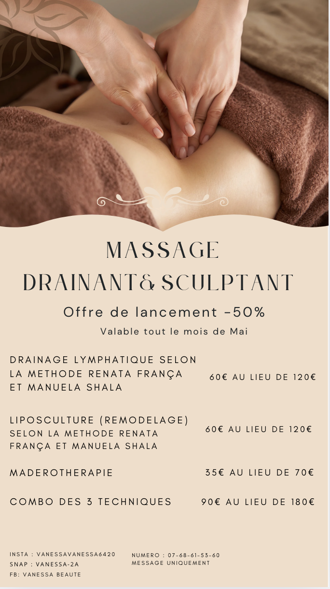

Création graphique / Canva

Ce projet consiste en la création d’une affiche de communication réalisée pour l’entreprise AENORA, dans le cadre d’un projet réel. L’objectif était de concevoir un visuel clair, professionnel et cohérent avec l’image de l’entreprise.
J’ai réalisé cette affiche sur Canva, en travaillant la mise en page, le choix des couleurs et la typographie afin de transmettre un message lisible et attractif. L’accent a été mis sur la simplicité et l’harmonie visuelle pour correspondre aux valeurs de l’entreprise.
Ce projet m’a permis de mettre en pratique mes compétences en création graphique tout en répondant à une demande concrète, avec des contraintes réelles liées à une communication professionnelle.